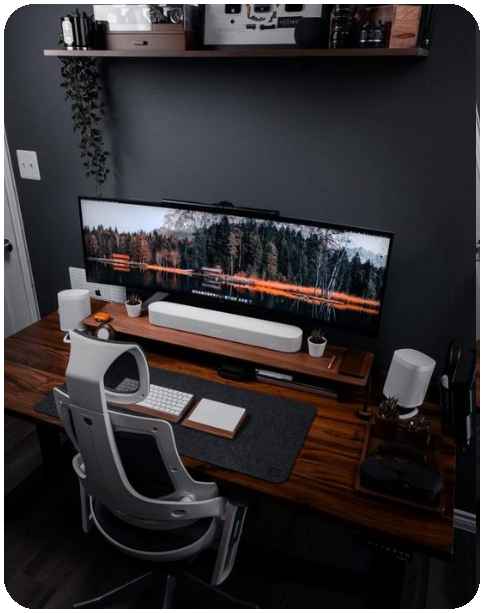
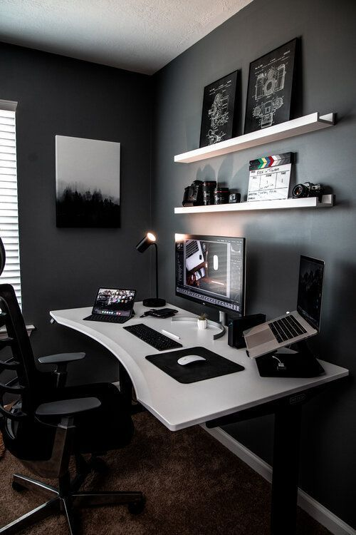
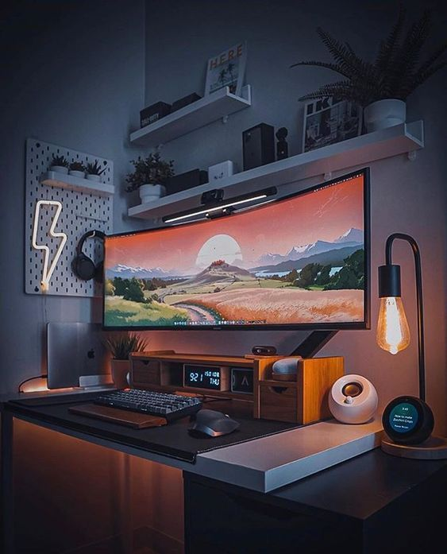

TechPro Solutions
Inovação impulsionada pela experiência.
Oportunidade de Desenvolvedor Front-End Remoto na TechPro Solutions.
Você é um(a) desenvolvedor(a) front-end talentoso(a) em busca de novos desafios e oportunidades de trabalho? Temos uma vaga empolgante para você! Estamos em busca de um(a) desenvolvedor(a) front-end altamente habilidoso(a) para se juntar à nossa equipe internacional, e o melhor de tudo é que essa posição é 100% remota.
Nossa empresa é reconhecida globalmente e líder no setor em que atuamos. Estamos em constante crescimento e buscamos profissionais talentosos(as) e motivados(as) para se juntarem a nós nessa jornada emocionante.
Como desenvolvedor(a) front-end remoto, você terá a oportunidade de trabalhar em projetos desafiadores e inovadores. Sua principal responsabilidade será desenvolver interfaces de usuário interativas, atraentes e responsivas, garantindo uma experiência excepcional aos usuários finais.
br
Trabalhando de forma remota, você terá a flexibilidade de definir o seu próprio horário e trabalhar a partir do conforto da sua casa ou qualquer outro local de sua preferência. Nós acreditamos na importância do equilíbrio entre trabalho e vida pessoal, e valorizamos a autonomia e a confiança em nossa equipe.



Requisitos para vaga:
- Experiência comprovada como desenvolvedor(a) front-end, com sólidos conhecimentos em HTML, CSS e JavaScript.
- Familiaridade com frameworks e bibliotecas front-end, como React, Angular ou Vue.js.
- Capacidade de converter designs em interfaces de usuário funcionais e esteticamente agradáveis.
- Conhecimento de práticas de desenvolvimento web responsivo e otimização de desempenho.
- Habilidade para trabalhar de forma colaborativa em equipes multidisciplinares e se adaptar a diferentes metodologias de desenvolvimento ágil.
- Excelentes habilidades de comunicação verbal e escrita em inglês.
Se você é um(a) desenvolvedor(a) front-end apaixonado(a) pelo seu trabalho, busca uma posição desafiadora em uma empresa internacional e deseja trabalhar remotamente, não perca essa oportunidade! Candidate-se hoje mesmo e junte-se a nós nessa emocionante jornada no mundo do desenvolvimento front-end remoto.